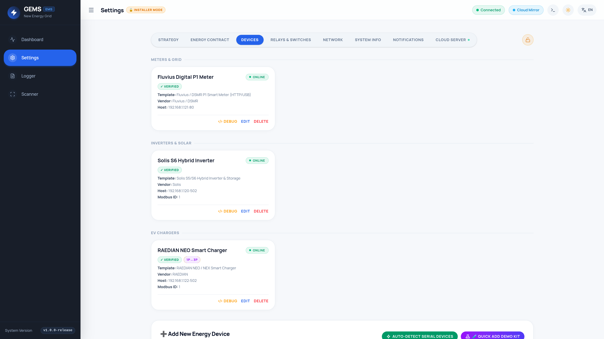

1. LV Voltage Guardrails, Compatible Solis Models & Pack Sizing
The Easyway 5200 Energy Storage Battery (UNIV5200) is a 51.2 V nominal (48V class) LiFePO4 pack rated at 102 Ah (5.22 kWh total / ~4.70 kWh usable at 90% DoD, 50 A recommended continuous charge/discharge per pack, expandable up to 16 parallel packs = 83.52 kWh).
-L / 48V) Solis Inverters ONLY:
- Never connect
UNIV5200modules in series! Multi-pack banks must be wired strictly in 51.2 V parallel (P+toP+,P-toP-). - Never connect
UNIV5200batteries to High-Voltage (-H) Solis models (such asS6-EH3P-HorRHI-3P-HVES, which operate at 160–600 Vdc). Always verify the-Lor48ESmodel suffix on the inverter nameplate!
| Solis LV Inverter Family | Architecture & GEMS Template | Max Battery Amps | Recommended UNIV5200 Count | Main DC Cable & Breaker |
|---|---|---|---|---|
| Solis RAI-3K-48ES-5G (3.0 kW 1P) | AC Retrofit (solis_retrofit) |
60 A (~3.0 kW) |
1 – 3× UNIV5200 (5.22–15.66 kWh) | 25 mm² • 100 A DC MCCB |
| Solis S6-EA1P(3.6–6)K-L (1P) | AC Retrofit (solis_retrofit) |
75 – 125 A |
2 – 4× UNIV5200 (≥2 packs for full 5kW+) | 35 mm² • 125–160 A DC MCCB |
| Solis S5-EH1P(3–6)K-L (1P) | PV + Storage (solis_hybrid) |
62.5 – 100 A |
2 – 4× UNIV5200 (1× caps at ~2.56 kW cont.) | 25–35 mm² • 125 A DC MCCB |
| Solis S6-EH1P(3–8)K-L-PLUS/PRO | PV + Storage (solis_hybrid) |
70 – 190 A |
2 – 6× UNIV5200 (≥3 packs for 8 kW cont.) | 35–50 mm² • 160–250 A DC MCCB |
| Solis S6-EH3P(5–10)K-L / NV-YD-L | 3P LV Hybrid (solis_hybrid) |
120 – 290 A |
3 – 8× UNIV5200 (via copper DC busbar) | 50–70 mm² • 200–300 A DC MCCB |
2. Step-by-Step Wiring: Easyway UNIV5200 to Solis Inverter
Complete all power, ground, DIP-switch, and communication wiring with all AC, PV DC, external DC MCCB, and battery switches turned OFF.
2.1 DC Power, Non-Polarized DC MCCB & Parallel Diagonal / Busbar Rules
- External 2-Pole Non-Polarized DC Breaker: Install a dedicated non-polarized 2-pole DC MCCB or NH gBat DC fuse isolator (rated
≥ 80 Vdc,100 A – 300 Aper table above) between the battery bank and the SolisBAT+/BAT-terminals. Never use polarized AC breakers on bidirectional battery circuits. - 2 to 3 Parallel Packs — Diagonal (Cross-Takeoff) Rule: Link
P+toP+andP-toP-using identical-length bridge cables. Connect the main inverterBAT+cable to Pack 1 (Master)P+, and connect the main inverterBAT-cable to the LAST Pack'sP-(Pack 2 or Pack 3). Equalizing loop resistance ensures all packs share charge and discharge amps evenly! - 4 to 16 Parallel Packs — Copper Busbar Rule: Above 3 modules, run equal-length
25 mm²fused branch cables from each individualUNIV5200to rated positive and negative tin-plated copper DC busbars (250–400 A), then feed the Solis inverter from the busbars. - Protective Earth (
⏚ PE): Bond everyUNIV5200chassis ground screw and battery rack to the Solis inverter PE bar using≥ 6 mm²green/yellow copper earth conductor.
2.2 BMS CAN RJ45 Cable Pinout (Master Pack 1 CAN ↔ Solis BMS Port)
| RJ45 Pin | T568B Wire Color | Solis BMS / CAN Port |
Easyway UNIV5200 CAN Port |
Action |
|---|---|---|---|---|
| Pins 1 – 3 | W-Orange / Orange / W-Green | NC / Enable GND / RS485-B | Reserved / Internal Bus | Leave Open / Disconnected |
| Pin 4 | Solid Blue | CAN-H (CAN High) |
CAN-H (CAN High) |
Connect Pin 4 ↔ Pin 4 |
| Pin 5 | White / Blue | CAN-L (CAN Low) |
CAN-L (CAN Low) |
Connect Pin 5 ↔ Pin 5 |
| Pins 6 – 8 | Green / W-Brown / Brown | RS485-A / Pin 7: +12V Enable | Reserved / Internal Bus | Leave Open / Disconnected |
Pro-Tip: Isolating only Pin 4 (CAN-H) and Pin 5 (CAN-L) prevents Solis's Pin 7 (+12V Enable) or Pins 3/6 RS-485 lines from back-feeding into reserved pins on the battery BMS!
2.3 Parallel Inter-Pack Link Cables & ADD Binary DIP Switch Table
Connect standard straight-through CAT5e/CAT6 patch cords from Pack 1 (Master) RS485-B / Link Out → Pack 2 RS485-A / Link In → Pack 3 In. Leave the CAN port empty on all Slave packs. Set the ADD DIP switches while all packs are powered OFF (ON = 1, OFF = 0, left-to-right SW1..SW4):
| UNIV5200 Pack Role | SW 1 | SW 2 | SW 3 | SW 4 | Binary |
|---|---|---|---|---|---|
| Single Pack or Master (Pack 1) | OFF |
OFF |
OFF |
OFF |
0000 |
| Slave 1 (Pack 2 — 10.44 kWh) | ON |
OFF |
OFF |
OFF |
1000 |
| Slave 2 (Pack 3 — 15.66 kWh) | OFF |
ON |
OFF |
OFF |
0100 |
| Slave 3 (Pack 4 — 20.88 kWh) | ON |
ON |
OFF |
OFF |
1100 |
| Slaves 4 – 15 (Packs 5 – 16) | Continue binary sequence: Pack 5 = 0010, Pack 6 = 1010, Pack 7 = 0110 … Pack 16 = 1111 |
0010..1111 |
|||
2.4 Safe Soft-Start Power-Up Sequence
- Verify cold DC polarity with a multimeter (all switches OFF).
- Switch individual
UNIV5200breakers ON and close the external 2-pole DC MCCB while the BMS LEDs are still asleep. - Press and hold Pack 1 (Master)
SW / POWERfor2–3 secondsso the internal pre-charge resistor gently charges the Solis DC bus capacitors (RUNLED green,ALMLED off; Slave packs wake sequentially). - Turn ON the Solis PV DC isolator (Hybrid models), then turn ON the AC Grid breaker.
3. Connecting & Configuring an Eastron SDM72D-M or SDM630-M Smart Meter
Eastron's 4-DIN-module 3-phase bidirectional Modbus RTU meters—SDM72D-M (and updated SDM72D-M-2, direct-connected up to 80A/100A) and SDM630-M (SDM630-Modbus V2/V3 80A/100A direct-connected or SDM630MCT CT-operated)—share Eastron's IEEE-754 Float32 register map (0x0000–0x004A) and integrate seamlessly with both Solis inverters and GEMS.
- Topology 1 (Recommended Standard — Wired to Solis
MeterRJ45 Port): Wire theSDM72D-M/SDM630-Minto the SolisMetersocket. Gives Solis autonomous hardwareSelf-Usetracking and forwards live grid watts + 3-phase currents to GEMS whenGrid Meter Connected? = Checked. - Topology 2 (Direct to GEMS — Sites Without a Utility P1 Port): Wire a dedicated
SDM72D-M/SDM630-Mto GEMS via USB-to-RS485 (or RS-485 TCP Gateway:502) using templateeastron_sdm72_x96oreastron_sdm630. (May share a GEMS USB-RS485 bus with Solis Option A by setting MeterAddr = 002and SolisAddr = 001). - 3-Phase Property Rule: Even with a 1-phase Solis inverter (
RAI-3K,S6-EA1P,S5-EH1P,S6-EH1P) on a 3-phase supply, install a 3-phaseSDM630-MorSDM72D-M-2(prefer V2-2over legacy V1 for full per-phaseV/Iregisters and Belgian3×230VDelta3P3Wsupport!).
3.1 How to Connect: Main AC Power, Placement & RS-485 Pinouts
- Switchboard Placement (Crucial for Retrofit & Hybrid): Install the meter immediately downstream of the utility DSO meter / main RCD, strictly upstream of all house breakers, heat pumps, Raedian EV chargers, existing rooftop PV inverters, and the Solis AC breaker.
- Direct-Connected AC Terminals (
SDM72D-M/SDM72D-M-2&SDM630-M, up to 100 A):- Top Cage Terminals (Grid Supply IN):
1 = L1 IN,2 = L2 IN,3 = L3 IN,4 = N IN. - Bottom Cage Terminals (House / PV / Solis / EV Load OUT):
5 = L1 OUT,6 = L2 OUT,7 = L3 OUT,8 = N OUT. (Leave4 & 8open on Belgian3×230VDelta3P3WwithSDM630-M/SDM72D-M-2; never reverse Top IN and Bottom OUT!).
- Top Cage Terminals (Grid Supply IN):
- CT-Connected Variant (
SDM630MCT): Fuse voltage taps (0.5A–2A) intoV1/V2/V3/VN(Terminals 4, 3, 2, 1) and wireCT1 (20/19),CT2 (18/17),CT3 (16/15)phase-for-phase with CT arrows strictly aligned.
| RS-485 Signal | Eastron Meter Terminal (SDM72D-M & SDM630-M) |
Topology 1: Solis Meter RJ45 (T568B) |
Topology 2: GEMS USB-RS485 / Gateway |
|---|---|---|---|
RS485-A (+) |
A / A+ / 485A (Pin 10 on SDM630-V2 Direct; Pin 14 on SDM630MCT; marked A on SDM72D-M)* |
RJ45 Pin 1 (White/Orange) (or screw terminal MTR485A) |
Adapter A+ / D+ / T/R+ |
RS485-B (-) |
B / B- / 485B (Pin 9 on SDM630-V2 Direct; Pin 13 on SDM630MCT; marked B on SDM72D-M)* |
RJ45 Pin 2 (Solid Orange) (or screw terminal MTR485B) |
Adapter B- / D- / T/R- |
| Shield / Ground | G / GND (Do not use + / - Pulse terminals!) |
Leave RJ45 Pins 3 – 8 Open | Adapter GND (120 Ω if > 30 m) |
3.2 How to Configure: Meter LCD (Password 1000), SolisCloud & GEMS
- On the Meter Front Panel (Default Password =
1000):- Unlock: On
SDM630-M, holdEfor3s→ enter1000→ holdE. OnSDM72D-M/SDM72D-M-2, long-press the front button3s→ short-press to change digit / long-press to advance to enter1000. - Parameters: Set Address (
Addr/Add) =001(or002only on a shared GEMS RS-485 bus alongside Solis ID1), Baud (bAud/baud) =9600, Parity (PrtY/Par) =nO/none(8N1), and System (SYS) =3P4(3×400V+N),3P3(Belgian3×230VDelta), or1P2(1×230V). Confirm the telephone handset (📞) icon lights on the LCD once polling starts!
- Unlock: On
- In SolisCloud App (Topology 1 — Wired to Solis
MeterPort): UnderAdvanced Settings → Storage Energy Set → Meter Set, selectEastron 3P(orSDM630— works for bothSDM630-MandSDM72D-M!) and Placement =Meter in Grid. Verify zeroMeter_Comm_FAILalarms underInformation → Meter Info. - In GEMS (
Settings → Devices):- Topology 1 (Wired to Solis): Simply check
Grid Meter Connected? = Checkedon your Solis Hybrid / Retrofit device card (do not add a duplicate Eastron card). - Topology 2 (Wired Directly to GEMS): Add a Smart Meter using
Eastron SDM72D / SMART X96 3-Phase Meter(eastron_sdm72_x96) orEastron SDM630 3-Phase Meter(eastron_sdm630) on persistent/dev/serial/by-id/...(9600 None) or TCP:502,Modbus ID = 1(or2on shared bus),Poll Interval = 2s,Phase Wiring = L1-L2-L3.
- Topology 1 (Wired to Solis): Simply check
4. Connecting Solis to GEMS (RS-485 vs. S2-WL-ST LAN Stick)
- Option A (Recommended Gold Standard — Direct USB-RS485 or Industrial RS-485 Ethernet Gateway): Wire shielded twisted pair (
9600 bps, 8N1, Slave ID1) to the Solis S6 dedicated internalRS485 / Modbusport—or on 4-pin circularCOMports, connect Pin 3 (Yellow) =RS485A+and Pin 4 (Blue) =RS485B-(optional Pin 2 Black =GND; never connect Pin 1 Red +5V!). Gives deterministic2–3scontrol independent of cloud sticks. - Option B (Wired
S2-WL-STDual Wi-Fi/LAN Stick orDLS-L): Plug an Ethernet cable into theS2-WL-ST, assign a static DHCP IP on your router, and connect GEMS via Modbus TCP on port502(5sPoll Interval). Note: Entry-level Wi-Fi-onlyS3-WiFi-STsticks are outbound cloud-only and silently drop local port502(i/o timeouteven when visible on LAN ARP/DHCP);S2-WL-STsticks on older firmware (< 100121cf/100141dx) require Solis Support to push the local Modbus TCP datalogger update—otherwise upgrade to a wiredS2-WL-STor wire Option A.
5. Exact Settings in the SolisCloud App (Local Bluetooth Commissioning)
Open the SolisCloud App near the inverter, tap Me → More Tools → Local Operation / Local Debugging → Connect with Bluetooth, sign in as Installer, and verify every setting below:
| SolisCloud Menu Path | Required Setting | Why Required |
|---|---|---|
Storage Energy Set → Battery Select |
Lithium Battery → PYLON LV(or Lithium Battery LV / AoBo) |
Establishes closed-loop 500 kbps CAN handshake with Easyway UNIV5200. Confirm BMS Info = Normal with live SOC % and current limits! |
Battery Select → Overdischarge SOC |
10 % (15–20% with Backup loads) |
Matches Easyway's 90% DoD rating while protecting LiFePO4 cell lifespan. |
Battery Select → Forcecharge SOC |
5 % (Keep ≥5% below Overdischarge!) |
Prevents Solis from triggering noisy emergency grid bounce-charging every night when standby SOC drifts by 1%! |
Battery Select → Max Charge / Discharge A |
50 A × Number of Packs(up to Inverter Max Amps) |
Unlocks full pack power (50 A = 1 pack, 100 A = 2 packs, 150 A = 3 packs). |
Storage Mode Select |
Self-Use = ON(All TOU Timers & Feed-in Priority = OFF) |
Clean autonomous self-consumption baseline with zero internal timer conflicts against GEMS. |
Storage Mode Select → Allow Grid Charging |
Allow / Enable |
Required so GEMS can trigger cheap/negative Day-Ahead spot charging and Winter Low-Solar Fallback. |
Meter Set & Internal EPM |
Eastron 3P (SDM630 / SDM72D-M) or Acrel • Meter in GridInternal EPM = OFF |
Ensures accurate import/export sensing (place meter right after utility meter, upstream of existing PV on Retrofit sites!) while letting GEMS dynamically manage negative-price curtailment. |
6. Onboarding Solis Hybrid vs. Solis Retrofit in GEMS
- Solis Hybrid (
S5-EH1P,S6-EH1P,S6-EH3P-Lwith PV panels + UNIV5200): In Settings → Devices (Installer Mode unlocked), onboard your utility P1 Meter (p1_serial) or GEMS-wired EastronSDM72D-M / SDM630-Mfirst if present, then choose Inverter / Solar →Solis S5/S6 Hybrid Inverter(solis_hybrid). SetPort = 502(or/dev/serial/by-id/...at9600 8N1),Modbus ID = 1, exactRated Power (kW),Allow Curtailment = Checked,Poll Interval = 2–3s(RS-485) or5s(S2-WL-ST), exactPhase Wiring,Grid Meter Connected? = Checked(if wired to Solis),Battery Connected? = Checked, and exact totalBattery Capacity (kWh)(5.2,10.4,15.7,20.9...). - Solis AC-Coupled Retrofit (
RAI-3K-48ES-5G,S6-EA1P-Lwith UNIV5200 alongside an existing PV inverter): Onboard your utility P1 Meter (p1_serial) or GEMS-wiredSDM72D-M / SDM630-M+ your existing solar PV inverter first, then add the Solis unit under Battery →Solis Retrofit Storage System(solis_retrofit_battery, or under Inverter / Solar →Solis Retrofit Inverter (AC Storage)) with exactPhase Wiring(L1,L2, orL3), total UNIV5200 capacity (kWh), andGrid Meter Connected? = Checkedwhenever the smart meter is wired directly to the SolisMeterport without a separate P1 meter on GEMS.

7. Optimal GEMS Strategy & EV Charger Coordination
- Enable Open-Meteo Solar Forecast (
Settings → Strategy): Enter site coordinates and check Enable Open-Meteo Solar Forecast Ingestion so GEMS never wastes money grid-charging the UNIV5200 ahead of a sunny morning. - Select Your Regional Mode:
- Flanders (
Flanders Mode): SetCapacity Peak Limit = 2.5 kW(or historical peak),Buffer = 150–200 W, and enter any Green Certificate (GSC) value (€/MWh)—vital on Solis Retrofit upgrades of legacy certificate-earning solar roofs! - Netherlands (
Netherlands Mode): EnableActive Inverter Curtailment(0.00 €/kWhthreshold) to prioritize Easyway storage + EV absorption and avoid negative feed-in penalties.
- Flanders (
- Easyway UNIV5200 Arbitrage & Longevity: Set Charging Strategy Mode =
Dynamic 24h Forecast, Battery Wear Cost =0.04 €/kWh, and enable Winter / Low-Solar Grid Charge Fallback (Trigger 25%→Target 65%over2–3 cheapest hours). - Preventing EV Wallboxes (Raedian) from Draining UNIV5200 at Night: Add a Custom Battery Cost Optimization Rule with Action =
Hold (Idle / No Export)during your overnight EV charging window (e.g.01:00 – 05:00) so your Raedian wallbox draws strictly from cheap off-peak grid power while preserving 100% of your Easyway battery for the morning household peak!
8. Quick Troubleshooting Reference
| Symptom | Probable Cause | Resolution |
|---|---|---|
CAN_Comm_FAIL / BatName-FAIL |
Wrong Battery Select profile or CAN cable pin/port mismatch | Plug CAN cable (Pins 4 & 5 isolated) from Master Pack 1 (ADD=0000) CAN port to Solis BMS port; select Lithium Battery → PYLON LV. |
Meter_Comm_FAIL (or Eastron offline in GEMS) |
A/B swapped, Even parity, wrong Slave ID, wired to Pulse +/-, or two masters attached |
Unlock meter (PASS 1000): set Addr = 001, 9600, Parity = None (8N1); wire Solis RJ45 Pin 1 (W-Orange) → A+ & Pin 2 (Orange) → B-; select Eastron 3P in SolisCloud. |
| Battery exports to grid when house load turns ON | SDM72D-M / SDM630-M Top (1–4 IN) & Bottom (5–8 OUT) reversed or CT arrow flipped |
Feed utility supply into Top 1–4 (IN) and house/PV/Solis from Bottom 5–8 (OUT); verify CT orientation on SDM630MCT. |
| Nightly brief grid recharge at 10% SOC | Forcecharge SOC too close to Overdischarge SOC |
Set Overdischarge SOC = 10% and Forcecharge SOC = 5% in SolisCloud Battery Select. |
| 5 kW inverter caps battery at ~2.55 kW | Single UNIV5200 BMS 50A continuous limit (50A × 51.2V) |
Normal single-pack protection; add a 2nd parallel UNIV5200 (100A = 5.12 kW) for full 5 kW continuous power. |
| Forced grid charging ignored | Allow Grid Charging disabled or internal TOU active |
Set Self-Use = ON, Allow Grid Charging = Allow, and disable all internal Solis TOU slots. |
i/o timeout or Connection refused on port 502 |
Cloud-only S3-WiFi-ST stick, S2-WL-ST firmware predates local Modbus TCP, or frozen Wi-Fi logger stack |
Wire Option A (USB-RS485 or RS-485 Ethernet gateway to Solis RS-485 port), replace S3-WiFi-ST with wired Ethernet S2-WL-ST, or ask Solis Support to push the local Modbus TCP datalogger firmware (≥ 100121cf / 100141dx). |